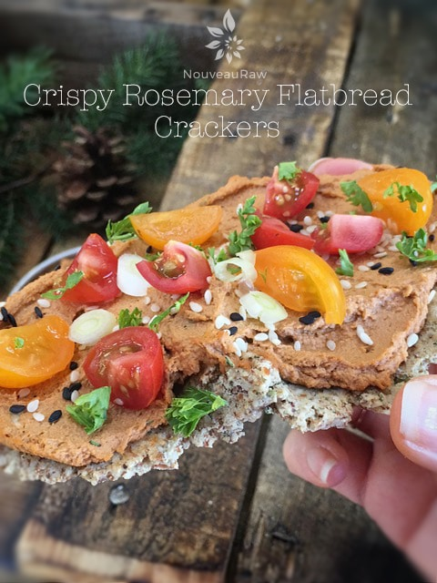

Crispy Rosemary Flatbread Crackers – version 1

~ raw, vegan, gluten-free ~
Before I got into the raw food lifestyle, I wasn’t much of a cook. I grew up eating foods that required the addition of water and heat. Man could I open a box. Spices? … salt and pepper were about all that I was comfortable with. And to put myself out there… as a child the only thing I used pepper for was to sniff it so I would sneeze. I keep telling you that I was easily entertained as a child.
I use to make boxed cake mixes and occasionally a box of Jiffy cornbread mix. We could buy those for .33 cents a box. I never made homemade bread and I certainly NEVER made crackers from scratch!
Whether a person eats a cooked diet, a raw diet, or a mix of the two, I don’t think that it is normal for people to make homemade crackers.
We tend to think of crackers like we do, let’s say ketchup. It’s just one of those things that you buy without a thought. Never really giving it the time of day on how to make them from scratch.
This is the part that I find, ummm, entertaining … In the cooking world, if you made a batch of crackers and shared them with friends and family, they would stand in awe. They would marvel at the fact that you made a cracker from scratch. Now, if a raw foodist or healthy food eater makes a cracker from scratch, people tend to wrinkle their nose (equating that healthy and taste good don’t combine) and comment how labor-intensive it is to eat healthily. Does this resonate with you too?!
Becoming conscious of the foods/ingredients that I put into my body… in my loved one’s bodies… I marvel at the fact that I can make such amazing foods. I never knew I was capable. My passion for healthier eating has really helped me to grow. How has this form of eating changed you?
- 4 cups moist, packed almond pulp
- 1/2 cup flax seed, ground
- 1 cup raw sunflower seeds, soaked & dehydrated
- 1/2 cup raw pumpkin seeds, soaked & dehydrated
- 1 Tbsp ground onion powder
- 1 Tbsp ground garlic powder
- 1/2 tsp Himalayan pink salt
- 1/2 cup water
- 2 Tbsp lemon juice
- 1 Tbsp olive oil
- 2 Tbsp fresh, minced rosemary
Preparation:
To make crisp flatbread crackers:
- Place the almond pulp in a large bowl and set aside.
- In the food processor, fitted with the ”S” blade, break down to flour, sunflower seeds, and pumpkin seeds. Add the ground flax, onion powder, garlic powder, and salt. Pulse together and add to the almond pulp in the large bowl.
- Add the water, lemon juice, olive oil, and rosemary. Mix with hands till everything is mixed together.
- Line your counter with parchment paper or use the teflex sheet that comes with the dehydrator. Give it a light coat of coconut or olive oil.
- Create approximately 1/4 cup sized balls of batter in the palm of your hand. Shape slightly into a cylinder shape and place on the prepared teflex sheet.
- Place another piece of parchment paper or teflex on top and with a rolling pin flatten the dough out, leaving it about 1/4″ thick. I did two at a time.
- Gently transfer to the mesh sheet that comes with the dehydrator. Repeat process until all the dough is used up.
- Sprinkle each flatbread with extra; sunflower seeds, flax seeds, pumpkin seeds, minced rosemary, and coarse sea salt. I also added cracked black pepper on top.
- Dehydrate at 145 degrees (F) for 1 hour then reduce to 115 degrees (F) for 8 hours, flip them onto the mesh sheet and peel the teflex sheet off. Continue drying for another 6-8 hours or until dry.
- Once cool, snap the crackers and apart and store in an airtight container for 2 weeks.

To make croutons:
- Follow directions #1 – #3 to create the batter.
- Spread the batter out onto the teflex sheet that comes with the dehydrator. Create a square shape and make the batter anywhere from 1/4 – 1/2″ thick.
- Score the croutons into small squares using a long ruler, knife, pizza cutter, or long offset spatula. Pick your tool!
- Transfer to the mesh sheet that comes with the dehydrator.
- To do this seamlessly, place a mesh sheet and tray on top of the croutons, the croutons are now sandwiched between two dehydrator trays.
- Hold on to both trays and flip over.
- Remove the now top tray and teflex sheet. The batter should now be on the mesh sheet.
- Sprinkle the top with extra; sunflower seeds, flax seeds, pumpkin seeds, minced rosemary, and coarse sea salt.
- Dehydrate at 145 degrees (F) for 1 hour, then decrease the temp to 115 degrees (F) and continue drying for 8-10 hours or until dry.
- Once cool, snap apart and store in an airtight container for 2 weeks.
To make crackers:
- Follow directions #1 – #3 to create the batter.
- Spread the batter onto the teflex sheet that comes with the dehydrator about 1/4″ thick. Square up the edges nice and straight, then score the crackers into the desired shape and size. I used a long metal ruler to score the crackers. You can use a pizza cutter or knife, just be careful that you don’t cut the teflex sheet.
- Dehydrate at 145 degrees (F) for 1 hour, then reduce to 115 degrees (F) for 8 – 14 hours or until dry.
- Once cool, snap the crackers and apart and store in an airtight container for 2 weeks.
Culinary Explanations:
- Why do I start the dehydrator at 145 degrees (F)? Click (here) to learn the reason behind this.
- When working with fresh ingredients it is important to taste test as you build a recipe. Learn why (here).
- Don’t own a dehydrator? Learn how to use your oven (here). I do however truly believe that it is a worthwhile investment. Click (here) to learn what I use.
© AmieSue.com